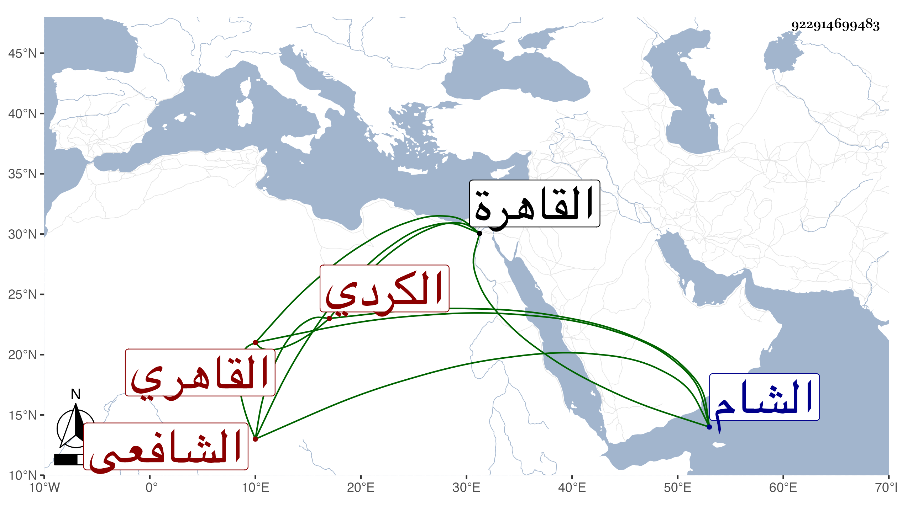

0902Sakhawi.DawLamic.ITO20230111-ara1.EIS1600.922914699483
Biography ID: 922914699483
283
عمر بن خليل بن حسن بن يوسف الركن بن الغرس الكردي الأصل القاهري الشافعي سبط الشهابي أصلم صاحب الجامع الشهير بسوق الغنم لأن أمه وهي ألف ابنة الشهاب أحمد الفارقابي أمها فرح خاتون ابنة أصلم فلذا يقال له ابن أصلم ويقال له أيضا ربيب الجلال البلقيني لكونه كان زوجا لأمه المذكورة تزوجها بعد والده المتزوج بها بعد أخيه البدر بن السراج وحظيت عند الجلال وكان يقال له ابن المشطوب لشطب كان بوجه والده . ولد في سنة ثمانمائة بالقاهرة ونشأ بها فحفظ القرآن عند النور المنوفي والعمدة وعرضها على البرهان ابن زقاعة وآخرين منهم زوج أمه الجلال ويسيرا من التنبيه وكثرت خلطته له فحفظ عنه أشياء من نظم وغيره وسافر معه إلى الشام المرة الأولى وسمع عليه وكذا على الشرف بن الكويك والجمال بن الشرائحي وغيرهم ، وحج صحبة أمه في سنة عشرين وصاهر العلم البلقيني على أكبر بناته وأقام معها دهرا وولي نظر جامع أصلم والتحدث على أوقاف طرنطاي الحسامي وبنى دارا بالقرب من مدرسة الولوي البلقيني وحدث باليسير أخذ عنه الطلبة وكنت ممن أخذ عنه قديما جزءا ، وكان كثير الحركة والكلام قائما بعياله وأولاده مرتبا لكل منهم عليه راتبا يوميا ، وقد كبر وهش ولزم بيته مديما للتلاوة حتى مات في رمضان سنة ثمان وثمانين وصلي عليه بجامع الحاكم في مشهد لا بأس به ثم دفن بجامعهم في سوق الغنم رحمه الله وإيانا .
